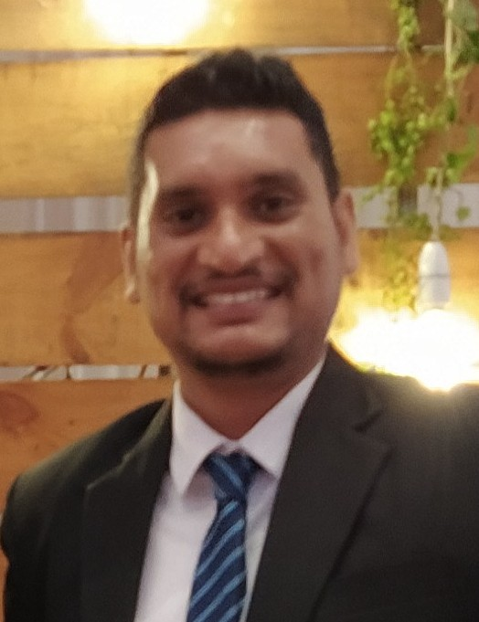

Vajira Vishvanath Liyanaarachchi

Summary
To be associated with a dynamic and progressive organization that will allow me
to utilize my abilities and qualifications in the field to add value to the
organization while providing me with opportunities for growth.
Education
- The Open University of Sri Lanka
B.Sc(Engineering)Hons. - Computer Engineering
2015-2023
- City and Guilds London Institute
Diploma in Electronics & Telecommunication Systems
Work Experience
- Technical Officer - PowerScan(Pvt)Ltd.
April 2011 - Present
- Implemented, installed, operated and maintained maritime
communication system, container handling system, DGPS tracking
researched system and IT infrastructure.
- Provided hardware and software engineering support for Information
Systems utilizing object-oriented Programming and client/server
applications
- Managed project deployment lifecycle, define requirements, researched
solutions, designed systems, supported testing and oversaw the live
implementation.
- Software Engineering Intern - Arthur C. Clarke Institute of Modern Technology(ACCIMT)
Mar 2021 - Jan 2022
- Design and develop the modules related to the Buddhist and Pali University
of Sri Lanka (BPUSL) Management Information System(MIS).
- Created frontend and backend of forms required for Its modules(ex-Payroll
system, Stores, Vehicle details, etc) and created pdf records using Laravel
and MySQL.
- Requirement Gathering-Meet with clients (BPUSL Staff Members) to discuss
software system design and maintenance.
Projects
Final Year Engineering Project
Automated solid waste segregation & management system using image
processing & machine learning (ML)
(Supervised by Dr. L.S Udugama and Eng. C.J Basnayakege)
- Studied problems in the existing solid waste management and segregation
process. Then identified which type of solid waste should be given priority in
the segregation.
- Developed a waste sorting algorithm to detect the types of waste using
electronic sensor feedback and machine learning techniques.
- Developed a web-based system to upload and inspect (or access) all the
real-time data of stored wastes with an IoT platform
More project details and videos
Certificates
- CCNA(Routing & Switching), CISCO Networking Academy - LAVTC
- National Certificate in Computer Network Technician (NVQ) Level – 04
- International Certificate in CISCO IT Essentials - PC Hardware & Software
- Certificate in Electronics - German Tech(CGTTI).
- Certificate in Workshop Practice - German Tech(CGTTI)
Skills
- Problem Solving - ⭐⭐⭐⭐⭐
- Team work - ⭐⭐⭐⭐⭐
- Handling conflict - ⭐⭐⭐⭐
- Communication - ⭐⭐⭐
Other